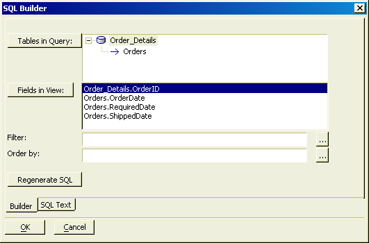
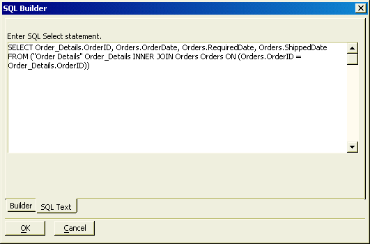

SQL Builder
The SQL Builder is used in a web component to construct a SQL SELECT statement against one or more tables when the data source is Microsoft Access or another ADO/ODBC compatible database.
To open the SQL Builde r:
Display the Web Projects Control Panel.
Open an existing grid component or create a new grid component.
On the Grid > Data Source menu page, select either Remote Database accessed via ADO or Remote Database accessed via AlphaDAO.
After connecting to the database, select Base on SQL Select Expression.
Click Edit SQL.

 Note : SQL expressions
used in web publishing should conform to native ADO database requirements
when working with ADO databases and <span class=Screen>Portable SQL</span> standards when working with non-ADO
databases.
Note : SQL expressions
used in web publishing should conform to native ADO database requirements
when working with ADO databases and <span class=Screen>Portable SQL</span> standards when working with non-ADO
databases.
To use the SQL Builder :
Click Tables in Query to display the Define Join dialog.
In the Define Join dialog click Add Table to display the Add Table dialog.
In the Add Table dialog select a table or view from the Tables list.
Optionally, enter an Alias for the table or view.
Click OK to continue or Cancel to discard your selection and return to the Define Join dialog box.
For each additional table that you want to include in this SELECT statement, pick the parent table and click Add Table. Repeat steps 2a through 2d.
For each child table visible in the Define Join dialog box, optionally set the following values.
Select a different table from the Table drop-down list.
Specify a different Alias for the table.
 Note : A table alias
can make your grid portable, by separating it from direct reference to
a table name. as long as a table has the same structure
and the same alias, it can use a grid originally built for another table.
However, if you change an alias after you select
the fields to retrieve, you will have to redefine the field selection.
Note : A table alias
can make your grid portable, by separating it from direct reference to
a table name. as long as a table has the same structure
and the same alias, it can use a grid originally built for another table.
However, if you change an alias after you select
the fields to retrieve, you will have to redefine the field selection.
Select a different parent table from the Parent drop-down list.
Make a different selection in the Include Parent list.
Specify a different Link Expression for the child table. Click
 to display the Select Fields
dialog.
to display the Select Fields
dialog.Specify a different Parent Link Expression for the parent table. Click
to display the Select Fields
dialog.If you want to discard your changes, click Cancel Edits.
If you made any changes you want to keep, click Apply Edits.
Click OK to continue or Cancel to discard your inputs and return to the SQL Builder.
Click Fields in View to display the Select Fields in View dialog.
Select a table from the drop-down list at the top left of the dialog box.
Select the fields that you want to include in the grid and click
 to put their
names into the displayed field list at right.
to put their
names into the displayed field list at right.Optionally, click
 to add all fields to the grid.
to add all fields to the grid.Use
 and
and  to remove individual or all fields from
the displayed field list.
to remove individual or all fields from
the displayed field list.Optionally, compose an expression based on multiple fields.
Use the
 and
and  buttons to sort the displayed field list.
buttons to sort the displayed field list.Optionally, use the
 ,
,  ,
,  and
and  buttons to reorganize the sequence of fields.
buttons to reorganize the sequence of fields.Click OK to select these fields or Cancel to exit without changes.
Optionally, click
 at the right side of the Filter
field to display the Specify Filter dialog box.
This dialog specifies which records will be retrieved (the WHERE clause
of the SELECT statement). Refer to ((|#Specifying_a_Filter_Expression|Specifying a Filter Expression)).
at the right side of the Filter
field to display the Specify Filter dialog box.
This dialog specifies which records will be retrieved (the WHERE clause
of the SELECT statement). Refer to ((|#Specifying_a_Filter_Expression|Specifying a Filter Expression)).Optionally, click
at the right side of the Order
field to display the Specify Order dialog box.
This dialog specifies the ordering clause(s) of the SELECT statement).
Refer to Specifying an Access Order Expression.Optionally, display the SQL Text tab to see the SQL SELECT statement. You may manually edit this statement, but afterwards it will no longer be editable by the SQL Builder.

Click OK to continue or Cancel to discard your inputs and return to the Web Component Builder.
Specifying a Filter Expression
This SQL expression will refer to one or more fields in the table and return a logical value (i.e. True or False).
 Note : Clicking Live Preview in the Web Component
Builder will return a Syntax error message if your SQL expression
is not syntactically correct.
Note : Clicking Live Preview in the Web Component
Builder will return a Syntax error message if your SQL expression
is not syntactically correct.
If you want to select all records in the table or view, click Cancel.
You can directly type an SQL expression in the Filter field.
Use the
button to select fields from the Available
Fields list.Use the AND, OR, =, and ' buttons to insert these language element into the Filter field.
Click OK to complete the filter expression or Cancel to discard your inputs.
Specifying an Order Expression
This SQL expression will refer to one or more fields in the table. Fields will be separated by commas.
 Note : Clicking Live Preview in the Web Component
Builder will return a Syntax error message if your SQL expression
is not syntactically correct.
Note : Clicking Live Preview in the Web Component
Builder will return a Syntax error message if your SQL expression
is not syntactically correct.
If you want to select all records in the table or view, click Cancel.
You can directly type an SQL expression in the Filter field.
Use the
button to select fields from the Available
Fields list.Use the AND, OR, =, and ' buttons to insert these language element into the Filter field.
Click OK to complete the filter expression or Cancel to discard your inputs.
If you are in the process of creating a grid, continue with Selecting the Fields to Display.
See Also
Creating a Grid Component, Portable SQL, Supported Portable SQL Syntax
Supported By
Alpha Five Version 6 and Above